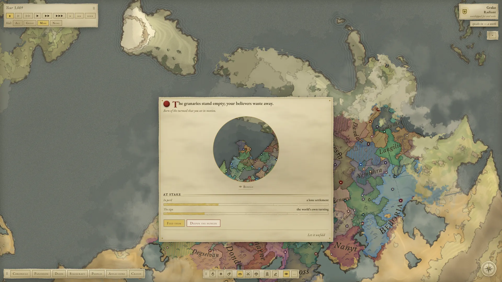

Your hand on the world
You have dozens of acts, some merciful and some cruel, and you aim each one at a land, a people, a realm, a great house or another god.
When an army gathers for a siege, the fortunes of a war turn, a realm sues for peace or a plague takes hold, the world halts at the tipping point and waits for you to decide which way it falls.

You are not the only god
Rival gods are born from the faith of mortals, and they fade when too few still worship them. They hold grudges and make pacts, and they often move against you where you cannot see.
A god’s deeds leave marks on the land that show what kind of god made them, though not always which one. Read them and weigh the suspects.
A world with its own history
Every world, down to its continents and rivers, grows from a word you choose. Bands of foragers wander it, learn to farm and settle.
A single world can run for thousands of years. It lives on its own, and what you do changes its course.
Its towns
Villages grow into cities, and some cities become the seats of realms.


The Chronicle
The Chronicle was writing before the first realm rose, and it will still be writing when the last one falls. Its book is divided into ages, each with its own dawn and dusk. It tells of rulers’ lives and the fortunes of the powerful, and your deeds are written there among theirs. The Chronicle knows where a god has touched the world, but it does not always say which god.
Each world gets a different book, and its ages are named for what defined them, such as the Age of Tangled Fates or the Age of Fading Gods.
Where it stands
Chronicle of Gods is made by one person and is coming to Early Access. Everything described above is in the game today, and the game will keep growing from here. Wishlist to follow along, or join the Discord if you want a say in what comes next.